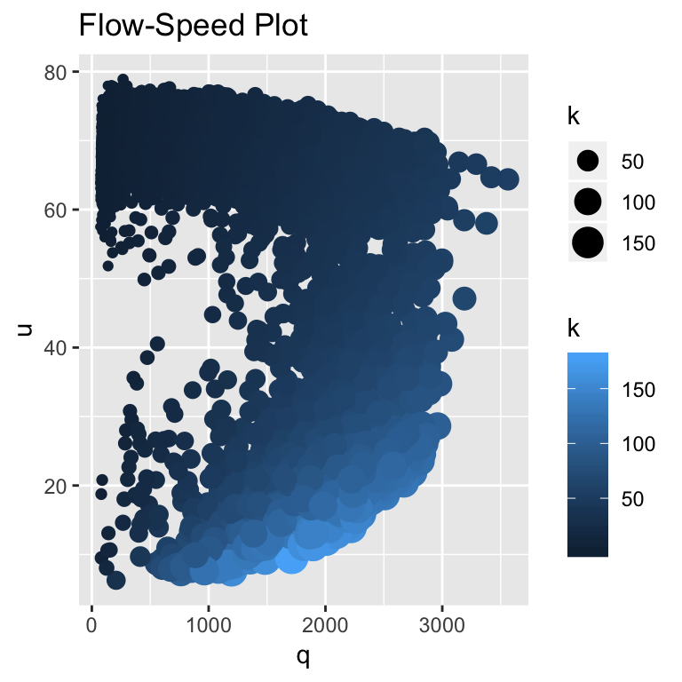

Traffic Noise
To develop a successful transportation operation and management plan, there is a clear need for understanding of the process being operated and managed. The decision-making framework presented in the Drivers section, The Learning Process, will be used here and in subsequent analyses. It is worth repeating that our principal aim is to explain highway performance realistically using simple, easy-to-understand models. This is not easy task because traffic data are noisy.
A Congested State
The following conceptual model derived from a simple sampling experiment has been proposed:
\(\pi(n) = P(X = 1|N = n) = P(U < u^*|N = n)\).
The model has limitations:
- It is impossible tool to use from a traffic engineering point of view.
- It is difficult to calibrate.
- It contains no provision for the assumption that drivers are self optimizers.
- It contains no provision to measure delay and other highway performance measures.
These shortcomings must be addressed and overcome. The overall approach consists of the following steps:
- The fundational relationship, \(q = k * u\), is introduced into the analysis where \(u\), \(k\) and \(q\) are defined to be traffic speed, measured in miles per hour (mph), traffic density, measured in vehicles per mile per lane (vpm) and traffic flow, measured in vehicles per hour per lane (vph), respectively.
- The findings from a ring-road experiment, a controlled experiment, is introduced into the analysis. A critical feature of the experiment is number of vehicles in the investigation is that \(n\) is fixed number, a constant.
- Concepts of derived from elementary car following models are introduced into the analysis to account for driver reactions due to changes of traffic behavior over time. Vehicle length or effective length \(l_{eff}\), measured in feet, and safe driving headway \(h_{safe} = f(u, l_{eff})\), measured in feet and function of speed \(u\) are also introduced.1
It is worth noting that an exploratory data analysis is primary focus used in this section. A logistic regression model, denoted as \(\pi(k)\), will replace \(\pi(n)\) where traffic density \(k\) is an explanatory variable. Traffic density is defined as the number of vehicles per unit length \(l\) or \(k = n/l\).
Exploratory Data Analysis
Our first step is to glean as much information as possible from an exploratory data analysis. Raw, real-world data, data collected on the northbound lane on interstate I-93 in Salem, New Hampshire contains 20,656 recordings of \(q\), \(k\) and \(u\) Laflamme and Ossenbruggen (2017). The recording were made over a contiguous period of eight months. The individual observations of \(q\), \(k\) and \(u\) are estimated as follows: (1) A flow is estimated as \(q = m/\tau\) where \(m\) is a vehicle count, the total number of vehicles observed over a 15-minute time interval or \(\tau\) = 15-minutes. (2) Speed is estimated as space-mean speed where \(u = m/(1/\sum u_j)\) where \(u_j\) is a radar speed recording for vehicle \(j = 1,2,..., m\). (3) Density is derived from the fundamental relationship of traffic flow \(q = k * u\) or \(k = q/u\) (Daganzo 1997).
Next, we look for meaningful relationships using scatter plots and box plots. We also keep in the back of our minds that the ring-road experiment that \(n\) is fixed and can be easily transformed to a density measurement as \(k = n/l\) because the road length \(l\) is also a fixed number.
Once these relationships are revealed, the next steps is to develop mathematical models that capture these relationships. Since the Learning Process is used, models are critically analyzed. The aim is to justify the replacement of the \(\pi(n)\) model with a logistic model of traffic density \(\pi(k)\).

The Flow-Speed Plot reveals much about the traffic at the site.2 As mentioned many times previously, the data are extremely noisy, making it difficult to reveal clear-cut patterns in the data. By using scaling and color shading of the \(k\) dots, the scatter plot becomes enhanced, making it somewhat easier but still difficult to reveal patterns or associations in the data.
The scatter plot is most helpful in defining the free-flow and congested states. A critical speed is chosen to be \(u^*\) = 50 mph. A free-flow state, \(X = 0\), satisfies the inequality \(u > u^*\) and a congested state, \(X = 1\), satisfies the inequality \(u \leq u^*\). The smaller/black dots indicate fewer vehicles per mile than the large/blue dots. Low speeds and high densities, \(u \le u^*\) and \(k > 70\) vpm, tend to be associated with congested state \(X = 1\).
Since the “controlled” ring-road experiment used a fixed value of \(k\), the relationship between \(k\) and \(u\) was explored with the Box Plot of Density-Speed. To construct this diagram, the speeds were sorted and placed into bins. For example, the labeled as \(k^*\) = 45 vpm consists of observations ranging 42.5 to 47.5 vpm. The Highway Capacity Manual (HCM) defines capacity of a interstate freeway lane to be \(k^*\) = 45 vpm.
Visual inspection reveals that the chance of driving in a free-flow state, \(X = 0\), is greater when \(k^* \le 45\) vpm. \(X = 1\) speeds are considerably less than 25 mph when \(k^* \ge 50\) vpm. It is impossible to explain why so many congested speed observations are located in the \(0 < k \le 50\) range. For \(k > 50\) vpm, a good case can be made that a congested state will be observed.

A Logistic Regression Model
The data set that was used to create the Box Plot of Density-Speed was also used to fit a \(\pi(k)\) model, a logistic model of the form,
\(\pi(k) = \frac{exp(\alpha + \beta * k)}{1 + exp(\alpha + \beta * k)}\)
where \(\alpha\) = -12.3 and \(\beta\) = 0.265. This model replaces the \(\pi(n)\) model above.
The data set consists of twenty-four density bins or categories (Agresti 1990). We denote traffic density as categorical variable \(K\) where \(K = k\) = 5, 10, …, 120 vpm. The total number of observations in category \(k\) is denoted as \(n_k\) and the number of speed observations in \(k\) satisfying the equality \(u < u^*\) is denoted as \(m_k\). The proportion of observations in the congested state \(X = 1\) is calculated as \(p_k = m_k/n_k\). The proportion of observations in the free-flow state \(X = 0\) is \(1 - p_k\).
The \(p_i\) values are shown in the following plot as solid circles and the forecasts of \(\pi(k_i)\) are shown as open circles. The model fits the data well.
The model forecasts that a freeway will be in a congested state \(X = 1\) with a probability of \(\pi(k^* = 45)\) = 0.41 at the \(k^*\) = 45 vpm. A slight increase in traffic density to 50 vpm shows a significant increase in the forecast, \(\pi(k = 50)\) = 0.8. The model shows the importance of traffic density in explaining the risk of operating in a congested state.
Macroscale and Microscale Data and Models
The logistic regression model of \(\pi(k)\) uses macroscale data, data averaged over 15-minute intervals. Driver reaction to various traffic stimuli takes place in time measured in seconds. To more fully explain and understand the traffic behavior, a microscale model, a time series model of speed \(U(t)\) where is measured in second, is introduced. See Ring-Road.
References
Agresti, Alan. 1990. Categorical Data Analysis. John Wiley & Sons.
Daganzo, Carlos F. 1997. Fundamentals of Transportation and Traffic Operations. Permagon.
Laflamme, E. M., and P. J. Ossenbruggen. 2017. “Effect of Time-of-Day and the Day-of-the-Week on Congestion and Breakdown: A Case Study at a Bottleneck in Salem, NH.” Journal of Transportation and Traffic Engineering 4 (1).